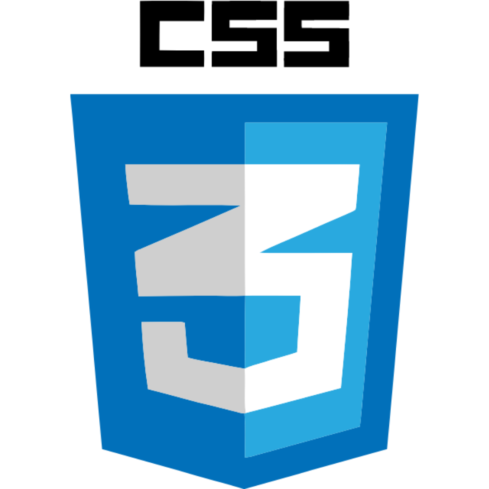
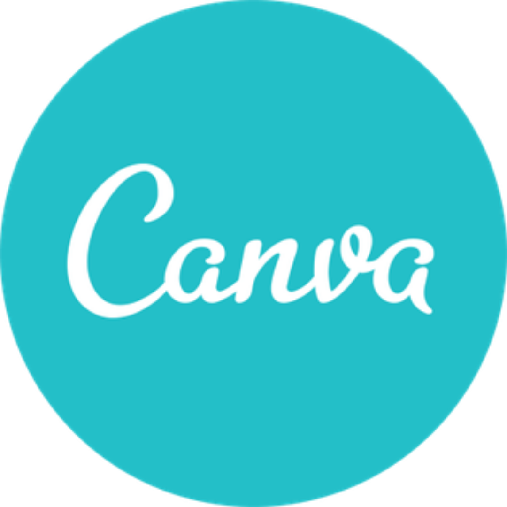
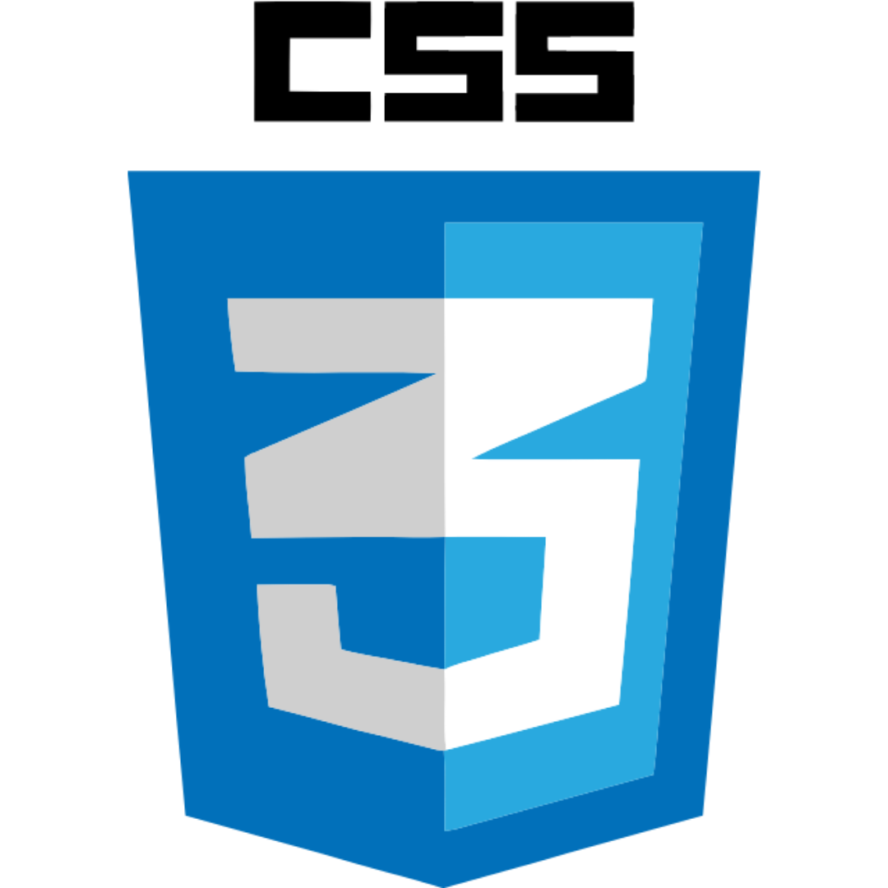
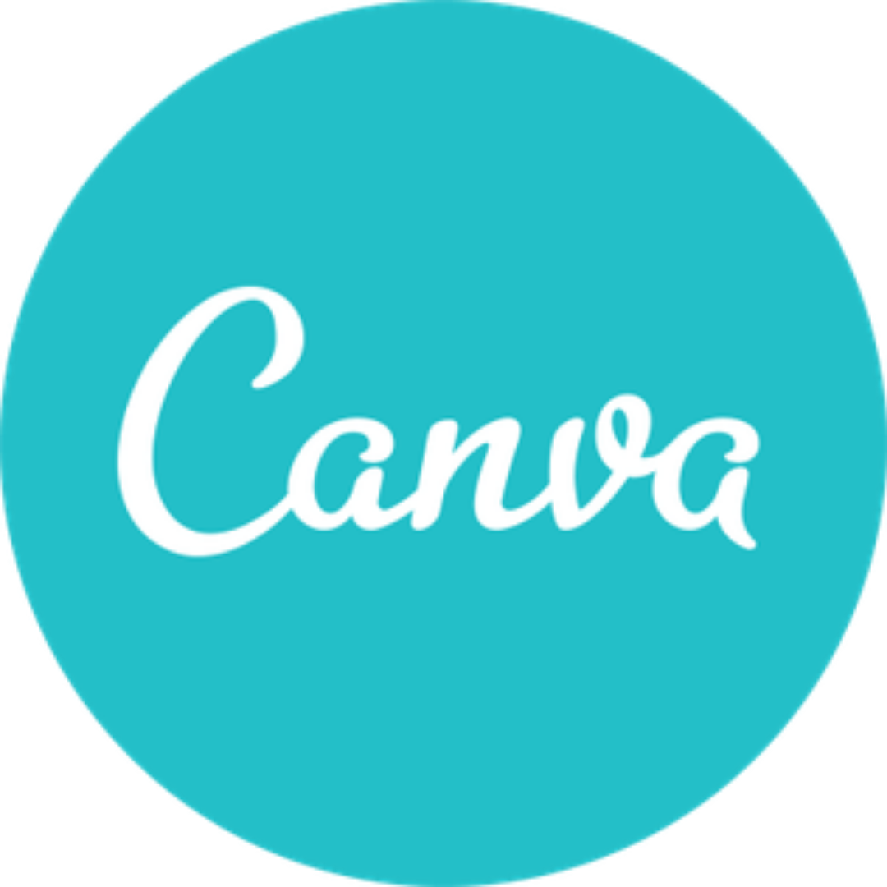
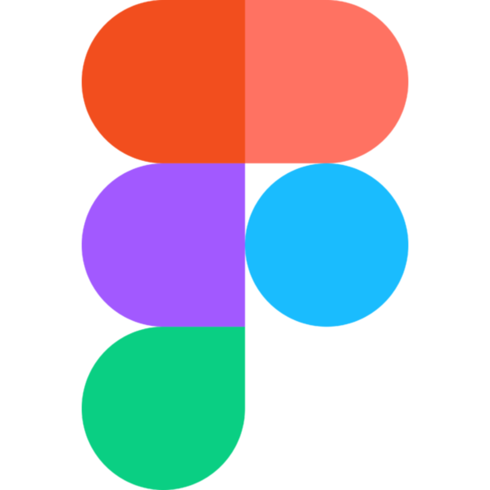
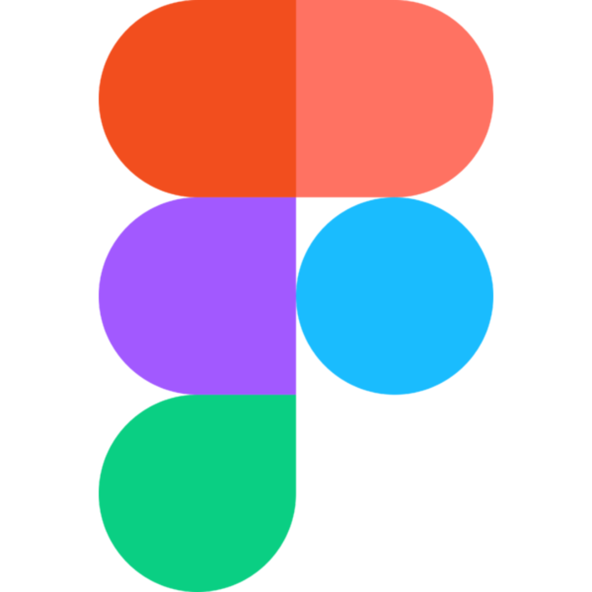

Group Projects
Nutshell
This project was a collaborative effort of myself and three classmates. We worked together using individual and group programing to plan, build and implement features for a planning app. Features included forms to schedule events, task lists, favorited news articles, weather of the day that used an external API. My contributions were the weather feature, and the events feature.
Technology Used:
 




 

Holiday Road
This project was a collaborative effort of myself and four classmates. We worked together using peer and group programing to plan, build and implement features for a planning app. Features included sorting features to plan a trip location, food options monuments and weather of the day that used an external API. My contributions were the weather feature, and all group efforts.
Technology Used:
Solo Projects
Find A Farmer
This project was a solo project. A CRUD web application, built with React, that allows environmentally minded individuals, who would like to prevent food waste from going to landfills to connect with local pig farmers, who have agreed to welcome visitors to feed food scraps to their pigs. The result being a decrease of food waste entering landfills, and a budget friendly alternative for farmers to be able to provide their pigs with a nutritious diet.
Technology Used:
Technology
Education
Nashville Software School
Full Stack Bootcamp
HTML | CSS | JavaScript | React | C# .Net | SQL
Graduation: May 2021
NSS's Full Stack boot camp is an immersive, fully virtual, six month program designed to give me and my classmates the skills required to enter the job market as a junior level web developer.
Front End: HTML, CSS, JavaScript, GitHub, Git
Group projects using the SCRUM method to plan the project, assign tasks and build individual components
Back End: C#, .Net